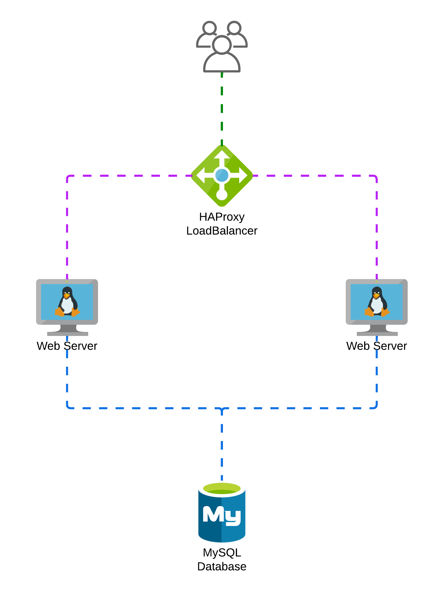

Creating an Ansible Collection with 3 Roles
Exercises
In this exercise you’ll create 3 roles to deploy a Web solution. This solution consists of:
-
1 HAProxy
-
2 HTTPD servers
-
1 MySQL database
A playbook including the roles and a task to copy the web content (2 php files), must deploy this solution.

1. Create inventory and group_vars
Create an asnible inventory with the hosts and groups, and the group_vars we’ll use.
2. Create an Ansible Role to deploy a MySQL database
Create an asnible role named mysql to deploy a MYSQL server.
3. Create an Ansible Role to deploy a Web Server
Create an asnible role named httpd to deploy web servers.
4. Create an Ansible Role to deploy a HAProxy Load Balancer
Create an asnible role named haproxy to deploy an HAProxy to load balance the requests to the web servers.